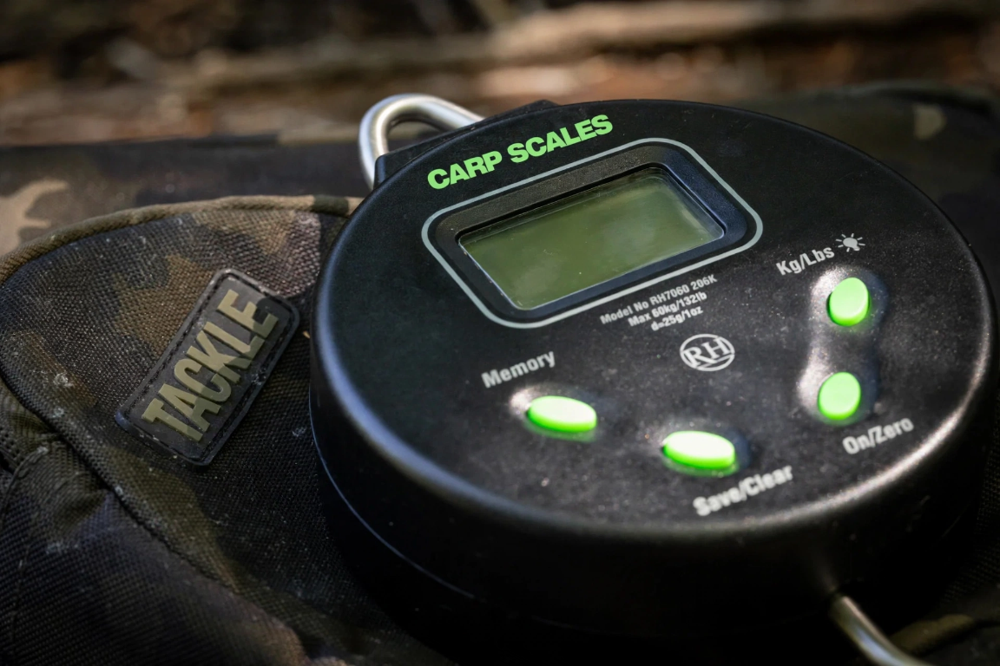

← All apps
Fish Weight Calculator

lb & oz
kg
Weight on the scale (fish + sling)
lb
oz
kg
Sling
lb
oz
kg
Edit saved slings
Name
lb
oz
kg
Save sling
Fish weight
–
Enter the scale reading to see the result.
Clear scale reading
Capture whole page